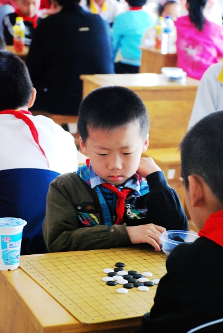

港闸区第四届中小学生五子棋比赛
首页
江苏五子棋
#1 港闸区第四届中小学生五子棋比赛 作者：有志青年 发表时间：2010-5-12 20:43:25
儿童、少年两个大组，每组分男女小组，合计约200名选手。
#2 Re:港闸区第四届中小学生五子棋比赛 作者：有志青年 发表时间：2010-5-13 9:32:31
傅麟杰二年级，此次比赛区排名17，9轮积5分

#3 Re:港闸区第四届中小学生五子棋比赛 作者：黄药师 发表时间：2010-5-13 12:44:27
没有去，来围观一下！
第一天晚上抽空打了两个电话，还是起到决定性作用的！
#4 Re:港闸区第四届中小学生五子棋比赛 作者：龙小小 发表时间：2010-5-16 21:26:15
 支持他们好可爱哦
支持他们好可爱哦